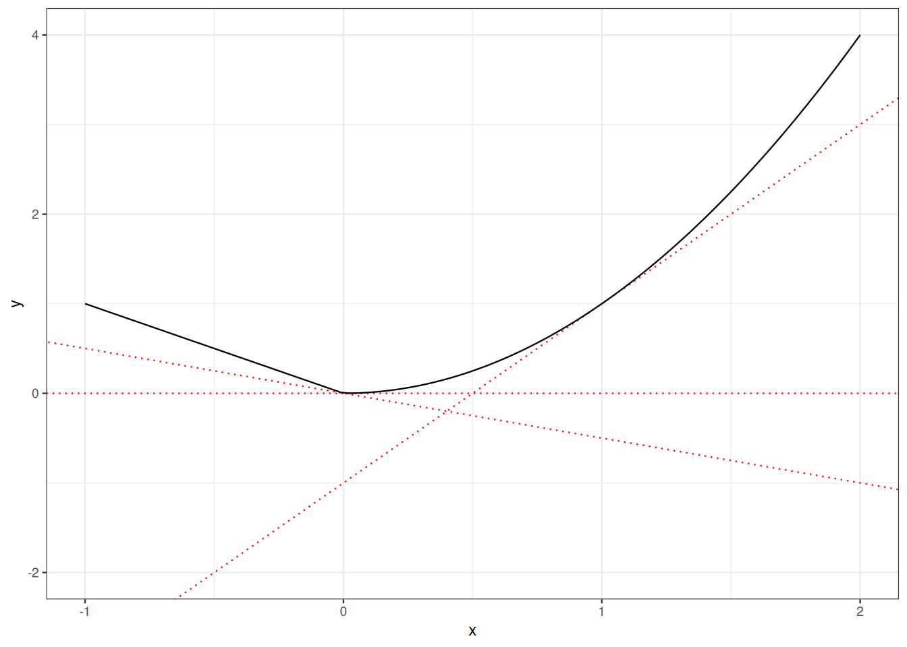
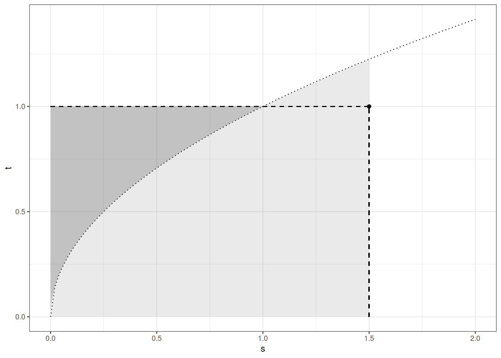

4 From integrals to expectation and moments
4.1 Roadmap
In Section 4.2), we relate the notion of expectation of a random variable and the notion of integral. The Transfer Theorem ( Theorem 4.1) is a key instrument in the characterization of image distributions.
In Section 4.3, we state, prove and showcase Jensen’s inequality. This inequality allows us to derive easy bounds on the expectation of convex functions of real random variables.
In Section 4.4, we pay special attention to the variance.
In Section 4.5
In Section 4.7
4.2 Expectation
The expectation of a real random variable is a (Lebesgue) integral with respect to a probability measure. We have to get familiar with probabilistic notation.
Definition 4.1 Let \((\Omega, \mathcal{F}, P)\) be a probability space. The random variable \(X\) defined on \((\Omega, \mathcal{F})\) is \(P\)-integrable if the measurable function \(|X|: \omega \mapsto |X(\omega)|\) is \(P\)-integrable: we agree on
\[ \mathbb{E} X = \mathbb{E}_P X = \int_{\mathcal{X}} X(\omega) \mathrm{d}P(\omega) =\int X \mathrm{d}P \, . \]
Exercise 4.1 Check the consistency of this definition with the definition used in the discrete setting.
The next statement called the transfer formula can be used to compute the density of an image distribution or to simplify the computation of an expectation.
Theorem 4.1 (Transfer formula) Let \((\mathcal{X}, \mathcal{F}, P)\) be a probability space, \((\mathcal{Y}, \mathcal{G})\) a measurable space, \(f\) a measurable function from \((\mathcal{X}, \mathcal{F})\) to \((\mathcal{Y}, \mathcal{G})\). Let \(Q\) denote the probability distribution that is the image of \(P\) by \(f\): \(Q = P \circ f^{-1}\).
Then for all measurable functions \(h\) from \((\mathcal{Y}, \mathcal{G})\) to \((\mathbb{R}, \mathcal{B}(\mathbb{R}))\)
\[ \mathbb{E}[h(Y)] = \int_{\mathcal{Y}} h(y) \mathrm{d}Q(y) = \int_{\mathcal{X}} h\circ f(x) \mathrm{d}P(x) = \mathbb{E} h\circ f(X) \, \]
if either integral is defined.
Proof. Assume first that \(h= \mathbb{I}_B\) where \(C \in \mathcal{G}\). Then
\[ \begin{array}{rl} \mathbb{E} h(Y) & = \int_{\mathcal{Y}} \mathbb{I}_B(y) \, \mathrm{d}Q(y) \\ & = Q(B) \\ & = P \circ f^{-1}(B) \\ & = P \Big\{ x : f(x) \in B \Big\} \\ & = P \Big\{ x : h \circ f(x) =1 \Big\} \\ & = \int_{\mathcal{X}} h \circ f(x) \mathrm{d}P(x) \\ & = \mathbb{E} h\circ f(X) \, . \end{array} \]
Then, by linearity, the transfer formula holds for all simple functions from \(\mathcal{Y}\) to \(\mathbb{R}\). By the definition of the Lebesgue integral, the transfer formula holds for non-negative measurable functions. The usual decomposition argument completes the proof.
\(\square\)
It is clear that the expectation of a random variable only depends on the probability distribution of the random variable.
4.3 Jensen’s inequality
The tools from integration theory we have reviewed so far serve to compute or approximate integrals and expectations. The next theorem circumvents computations and allows us to compare expectations.
Jensen’s inequality is a workhorse of Information Theory, Statistics and large parts of Probability Theory. It embodies the interaction between convexity and expectation.
We first introduce a modicum of convexity theory and notation.
Definition 4.2 (Lower semi-continuity) A function \(f\) from some metric space \(\mathcal{X}\) to \(\mathbb{R}\) is lower semi-continuous at \(x \in \mathcal{X}\), if
\[\liminf_{x_n \to x} f(x_n) \geq f(x) \, .\]
A continuous function is lower semi-continuous. But the converse is not true. If \(A \subseteq \mathcal{X}\) is an open set, then \(\mathbb{I}_A\) is lower semi-continuous but, unless it is constant, it is not continuous at the boundary of \(A.\)
Definition 4.3 (Convex subset) Let \(\mathcal{X}\) be a vector space, a subset \(C \subseteq \mathcal{X}\) is said to be convex if for all \(x,y \in C\), all \(\lambda \in [0,1]\):
\[\lambda x + (1-\lambda) y \in C \, .\]
Let \(C\) be a convex subset of some (topological real) vector space, let \(\overline{C}\) be the closure of \(C\). Prove that \(\overline{C}\) and \(\overline{C} \setminus C\) are convex.
A convex set may be neither closed nor open. Provide examples.
In the next definition, we consider functions from some vector space to \(\mathbb{R} \cup \{+\infty\}\).
Definition 4.4 (Convex functions) Let \(\mathcal{X}\) be a (topological) vector space. Let \(C \subseteq \mathcal{X}\) be a convex subset. A function \(f\) from \(\mathcal{C}\) to \(\mathbb{R} \cup \{\infty\}\) is convex if for \(x,y \in C\), all \(\lambda \in [0,1]\),
\[f(\lambda x + (1-\lambda) y) \leq \lambda f(x) + (1-\lambda) f(y) \, .\]
The domain of \(f\) \(\operatorname{Dom}(f)\) is the subset of \(C\) where \(f\) is finite.
Exercise 4.2 Check that a convex function \(f\) is lower semi-continuous iff sets \(\{ x : f(x) \leq t\}\) are closed intervals for all \(t \in \mathbb{R}\).
The next result warrants that any convex lower semi-continuous has a dual representation. This dual representation is a precious tool when comparing expectation of random variables.
Theorem 4.2 (Fenchel-Legendre duality) Let \(f\) be a convex lower-semi-continuous function on \(\mathbb{R}\) with a closed domain.
The dual function \(f^*\) of \(f\) is defined over \(\mathbb{R}\) by
\[f^*(y) = \sup_{x \in \text{Dom}(f)} xy - f(x) \, .\]
Then
- \(f^*\) is convex
- \(f^*\) is lower-semi-continuous
- If \(f^*(y)= xy - f(x)\) then \(y\) is a sub-gradient of \(f\) at \(x\).
- If \(y\) is a sub-gradient of \(f\) at \(x\), \(f^*(y) = xy -f(x)\).
- \(f= (f^{*})^*\), the dual function of the dual function equals the original function: \(f(x) = \sup_{y} xy -f^*(y).\)
Example 4.1 The next dual pairs will be used in several places.
- if \(f(x) = \frac{|x|^p}{p}\) (\(p> 1\)), then \(f^*(y)= \frac{|y|^q}{q}\) where \(q=p/(p-1)\).
- if \(f(x) = |x|\), then \(f^*(y)= 0\) for \(y \in [-1,1]\) and \(\infty\) for \(|y|>1\).
- if \(f(x) = \exp(x)\) then \(f^*(y) = y \log y - y\) for \(y>0\), \(f^*(y)=\infty\) for \(y<0\)
Proof. The fact that \(f^*\) is \(\mathbb{R} \cup \{\infty\}\)-valued and convex is immediate.
To check lower semi-continuity, assume \(y_n \to y\), with \(y_n \in \operatorname{Dom}(f^*)\) and \(f^*(y) > \liminf_n f^*(y_n)\).
Assume first that \(y \in \operatorname{Dom}(f^*)\). Then for some sufficiently large \(m\) and some \(x \in \operatorname{Dom}(f)\)
\[ f^*(y) \geq xy - f(x) -\frac{1}{m} > \liminf_n f^*(y_n) \geq \liminf_n y_n x -f(x) = yx -f(x) \]
which is contradictory.
Assume now that \(y \not\in \operatorname{Dom}(f^*)\) and \(\liminf_n f^*(y_n) < \infty\). Extract a subsequence \((y_{m_n})_n\) such that \(\lim_n f^*(y_{m_n}) = \liminf_n f^*(y_n)\). There exists \(x \in \operatorname{Dom}(f)\) such that \[ f^*(y) > xy -f(x) > \liminf_n f^*(y_n) = \lim_n f^*(y_{m_n}) \geq \lim_n xy_{m_n} -f (x) = xy - f(x) \]
which is again contradictory.
The fact that \(y\) is a sub-gradient of \(f\) at \(x\) if \(f^*(y)= xy - f(x)\) is a rephrasing of the definition of sub-gradients.
Note that if \(x \in \operatorname{Dom}(f)\) and \(y\in \operatorname{Dom}(f^*)\) then \(f(x)+f^*(y)\geq xy\).
This observation entails that \((f^*)^*(x)\leq f(x)\) for all \(x \in \operatorname{Dom}(f)\). If there existed some \(x \in \operatorname{Dom}(f)\) with \((f^*)^*(x)>x\), there would exist some \(y \in \operatorname{Dom}(f^*)\) with \(xy - f^*(y) > f(x)\) which is not possible.
In order to prove that that \((f^*)^*(x)\geq f(x)\) for all \(x \in \operatorname{Dom}(f)\), we rely on the convexity, lower semi-continuity of \(f\) and \(f^*\) and the closure of \(\operatorname{Dom}(f)\). Under these conditions, every point \(x\) in \(\operatorname{Dom}(f)\) has a sub-gradient \(y\) and this entails \(f(x) + f^*(y)= xy\).
\(\square\)
Exercise 4.3 Extend the notion of Fenchel-Legendre duality to lower-semi-continuous convex functions over \(\mathbb{R}^k\).
Exercise 4.4 Are all convex functions lower-semi-continuous? measurable?
Are all convex lower-semi-continuous functions measurable?
Remark 4.1. It is possible to define \(f^*\) as \(f^*(y) =\sup_x xy -f(x)\) even if \(f\) is not convex and lower semi-continuous. The function \(f^*\) retains the convexity and lower semi-continuity properties. But \(f \neq (f^{*})^*\), we only get \(f \geq (f^{*})^*\). Indeed \((f^{*})^*\) is the largest convex minorant of \(f\).
Theorem 4.3 (Jensen’s inequality) Let \(X\) be a real-valued random variable and \(f: \mathbb{R} \to \mathbb{R}\) be convex, lower-semi-continuous such that the closed set \(\text{Dom}(f) \subseteq \text{supp}(\mathcal{L}(X))\) and \(\mathbb{E} |f(X)|< \infty.\), then
\[f(\mathbb{E} X) \leq \mathbb{E} f(X) \, .\]
In view of the definition of convexity and of the fact that taking expectation extends the idea of taking a convex combination, Jensen’s inequality is not a surprise.
Proof. \[ \begin{array}{rl} \mathbb{E} f(X) & = \mathbb{E} (f^*)^*(X) \\ & = \mathbb{E} \Big[ \sup_y \Big( yX - f^*(y)\Big)\Big] \\ & \geq \sup_y \Big( y \mathbb{E} X - f^*(y)\Big) \\ & = (f^*)^*\Big( \mathbb{E} X \Big) \\ & = f\Big( \mathbb{E} X \Big) \, . \end{array} \]
\(\square\)
Exercise 4.5 In the argument above, it is not a priori obvious that \(\sup_y \Big( yX - f^*(y)\Big)\) is measurable, since the supremum is taken over a non-countable collection. Check that this is not an issue.
We will see many applications of Jensen’s inequality:
- comparison of sampling with replacement with sampling without replacement (comparison of binomial and hypergeometric tails)
- Cauchy-Schwarz and Hölder’s inequalities
- Derivation of maximal inequalities
- Non-negativity of relative entropy
- Derivation of Efron-Stein-Steele’s inequalities
- …
4.4 Variance
The variance (when it is defined) is an index of dispersion of the distribution of a random variable.
Proposition 4.1 (Characterizations of variance) Let \(X\) be a random variable over some probability space. The variance of \(X\) is finite iff \(\mathbb{E}X^2 <\infty\) and it may be defined using the netx three equalities:
\[ \begin{array}{rl} \operatorname{var}(X) & = \mathbb{E}\left[(X - \mathbb{E}X)^2\right] \\ & = \inf_{a \in \mathbb{R}} \mathbb{E}\left[(X - a)^2\right] \\ & = \mathbb{E}X^2 - (\mathbb{E}X)^2 \,. \end{array} \]
We need to check that three right-hand-side are finite if one of them is, and that when they are finite, they are all equal.
Proof. Assume \(\mathbb{E}X^2 < \infty\), as \(|X| \leq \frac{X^2}{2} + \frac{1}{2}\), this entails \(\mathbb{E} |X|<\infty\). If \(\mathbb{E}X^2 < \infty\) then so is \(\mathbb{E}|X|\). The right-hand-side on the third line is finite if \(\mathbb{E}X^2 < \infty\). As \((x-b)^2 \leq 2 x^2 + 2 b^2\) for all \(x,b\), The right-hand-side on the first line, the infimum on the second line are finite when \(\mathbb{E} X^2 <\infty.\)
As \(X^2 \leq 2 (X- \mathbb{E}X)^2 + 2 (\mathbb{E}X)^2\), \(\mathbb{E}X^2<\infty\) if \(\mathbb{E}\left[(X - \mathbb{E}X)^2\right] <\infty.\)
Assume now that \(\mathbb{E}X^2 < \infty\). \[ \begin{array}{rl} \mathbb{E}\left[(X - a)^2\right] & = \mathbb{E}\left[(X - \mathbb{E}X - (a-\mathbb{E}X))^2\right] \\ & = \mathbb{E}\left[(X- \mathbb{E}X)^2 - 2 \mathbb{E}[(X-\mathbb{E}X)](a-\mathbb{E}X) + (a-\mathbb{E}X)^2 \right]\\ & = \mathbb{E}\left[(X- \mathbb{E}X)^2\right] + (a-\mathbb{E}X)^2 \, . \end{array} \]
As \((a- \mathbb{E}X)^2\geq 0\), we have established that \(\mathbb{E}\left[(X - \mathbb{E}X)^2\right] = \inf_{a \in \mathbb{R}} \mathbb{E}\left[(X - a)^2\right]\). Moreover, the infimum is a minimum, it is achieved at a single point \(\mathbb{E}X\).
Remark 4.2. The first and second characterizations of variance assert that the expectation minimizes the average quadratic error. A fact of great importance in Statistics.
Exercise 4.6 Check that if \(P\left\{ X \in [a,b]\right\} =1\), then \(\operatorname{var}(X)\leq \frac{(b-a)^2}{4}\) , .
4.5 Higher moments
In this Section we relate \(\mathbb{E} |X|^p\) with \(\mathbb{E} |X|^q\) for different values of \(p, q \in \mathbb{R}_+\). Our starting point is small technical result in real analysis.
Proposition 4.2 (Young’s inequality) Let \(p, q>1\) be conjugate (\(1/p + 1/q =1\)), and \(x, y>0\), then \[xy \leq \frac{x^p}{p} + \frac{y^q}{q} \,.\]
Proof. Note that if \(p\) and \(q\) are conjugate, then \(q= p/(p-1)\) and \((p-1)(q-1)=1\).
It suffices to check that for all \(x,y>0\),
\[\frac{x^p}{p} \geq xy - \frac{y^q}{q} \, .\]
Fix \(x>0\), consider the function over \([0,\infty)\) defined by
\[z \mapsto xz - \frac{z^q}{q} \,.\]
This function is differentiable with derivative \(x - z^{q-1} = x - z^{1/(p-1)}\). It achieves its maximum at \(z=x^{p-1}\) and the maximum is equal to
\[x x^{p-1} - \frac{x^{q(p-1)}}{q} = x^p - \frac{x^p}{q} = \frac{x^p}{p} \, .\]
Figure 4.2 displays a graphic proof of Young’s inequality.

Remark 4.3. A special case of Young inequality is obtained by taking \(p=q=2\).
We are now in a position to prove three fundamental inequalities: Cauchy-Schwarz, Hölder and Minkowski.
Theorem 4.4 (Cauchy-Schwarz) Let \(X\) and \(Y\) be two random variables on the same probability space. Assume both \(\mathbb{E}X^2\) and \(\mathbb{E}Y^2\) are finite. Then
\[\mathbb{E} [XY] \leq \sqrt{\mathbb{E}X^2} \times \sqrt{\mathbb{E}Y^2} \,.\]
Proof. If either \(\sqrt{\mathbb{E}X^2}=0\) or \(\sqrt{\mathbb{E}Y^2}=0\), the inequality is trivially satisfied.
So, without loss of generality, assume \(\sqrt{\mathbb{E}X^2}>0\) and \(\sqrt{\mathbb{E}Y^2}>0\). Then, because \(ab \leq a^2/2 + b^2/2\), for all real \(a,b\), everywhere,
\[ \frac{|XY|}{\sqrt{\mathbb{E}X^2}\sqrt{\mathbb{E}Y^2}} \leq \frac{|X|^2}{2\mathbb{E}X^2} + \frac{|Y|^2}{2\mathbb{E}Y^2} \,. \]
Taking expectation on both sides leads to the desired result.
Exercise 4.7 Why is the inequality trivially satisfied if \(\sqrt{\mathbb{E}X^2}=0\)?
Theorem 4.4 tells us that if \(X\) and \(Y\) are square-integrable, then \(XY\) is integrable.
Hölder’s inequality generalizes Cauchy-Schwarz inequality. Indeed, Cauchy-Schwarz inequality is just Hölder’s inequality for \(p=q=2\) (\(2\) is its own conjugate).
Theorem 4.5 (Hölder’s inequality) Let \(X\) and \(Y\) be two random variables on the same probability space. Let \(p, q>1\) be conjugate (\(1/p + 1/q =1\)), assume both \(\mathbb{E}|X|^p\) and \(\mathbb{E}|Y|^q\) are finite. Then we have
\[ \mathbb{E} [XY] \leq \left(\mathbb{E}|X|^p\right)^{1/p} \times \left(\mathbb{E}|Y|^q\right)^{1/q} \,. \]
Proof. If either \(\mathbb{E}|X|^p=0\) or \(\mathbb{E}|Y|^q=0\), the inequality is trivially satisfied.
Assume that \(\mathbb{E}|X|^p > 0\) and \(\mathbb{E}|Y|^q > 0\).
Follow the proof of Cauchy-Schwarz inequality, but replace \(2 ab \leq a^2 +b^2\) by Young’s inequality:
\[ab \leq \frac{|a|^p}{p} + \frac{|b|^q}{q}\qquad \forall a,b \in \mathbb{R}\] if \(1/p+ 1/q=1\).
The inequality below is a consequence of Young’s inequality and of the monotonicity of expectation:
\[ \begin{array}{rl} \frac{\mathbb{E}|XY|}{\mathbb{E}[|X|^p]^{1/p}\mathbb{E}[|Y|^q]^{1/q}} & = \mathbb{E}\Big[\frac{|X|}{\mathbb{E}[|X|^p]^{1/p}} \frac{|Y|}{\mathbb{E}[|Y|^q]^{1/q}} \Big] \\ & \leq \mathbb{E}\Big[\frac{|X|^p}{p \mathbb{E}[|X|^p]} + \frac{|Y|^q}{q \mathbb{E}[|Y|^q]} \\ & = \frac{1}{p} + \frac{1}{q} \\ & = 1 \, . \end{array} \]
\(\square\)
Corollary 4.1 For \(1\leq p < q\), \[\mathbb{E}\Big[|X|^p\Big]^{1/p} \leq \mathbb{E}\Big[|X|^q\Big]^{1/q} \, .\]
For \(p \in [0, \infty)\) \(X \mapsto (\mathbb{E}|X|^p)^{1/p}\) defines a semi-norm on the set of random variables for which \((\mathbb{E}|X|^p)^{1/p}\) is finite. Minkowski’s inequality asserts that \(X \mapsto (\mathbb{E}|X|^p)^{1/p}\) satisfies the triangle inequality.
Theorem 4.6 (Minkowski’s inequality) Let \(X, Y\) be two real-valued random variables defined on the same probability space. Let \(p \in [1, \infty)\). Assume that \(\mathbb{E}|X|^p <\infty\) and \(\mathbb{E}|Y|^p<\infty.\) Then we have:
\[ \left(\mathbb{E} [| X + Y|^p]\right)^{1/p} \leq \left(\mathbb{E} [| X|^p]\right)^{1/p} + \left(\mathbb{E} [|Y|^p]\right)^{1/p} \]
which entails \(\mathbb{E}|X+Y|^p <\infty.\)
The proof of Theorem 4.6 follows from Hölder’s inequality (Theorem 4.5).
Proof. The inequality below also follows from triangle inequality on \(\mathbb{R}\), monotonicity. The last equality follows from linearity of expectation:
\[ \begin{array}{rl} \mathbb{E} \Big[ |X+Y|^p\Big] & \leq \mathbb{E} \Big[ (|X|+|Y|) \times |X+Y|^{p-1}\Big] \\ & = \mathbb{E} \Big[ |X| \times |X+Y|^{p-1}\Big] + \mathbb{E} \Big[ |Y| \times |X+Y|^{p-1}\Big] \, . \end{array} \]
This is enough to handle the case \(p=1\).
From now on, assume \(p>1\). Hölder’s inequality entails the next inequality and a similar upper bound for \(\mathbb{E} \Big[ |Y| \times |X+Y|^{p-1}\Big]\).
\[ \begin{array}{rl} \mathbb{E} \Big[ |X| \times |X+Y|^{p-1}\Big] & \leq \mathbb{E} \Big[ |X|^p\Big]^{1/p} \times \mathbb{E} \Big[ |X+Y|^{p}\Big]^{(p-1)/p} \, \end{array} \]
Summing the two upper bounds, we obtain
\[ \begin{array}{rl} \mathbb{E} \Big[ |X+Y|^p\Big] & \leq \left(\mathbb{E} \Big[ |X|^p\Big]^{1/p} + \mathbb{E} \Big[ |Y|^p\Big]^{1/p}\right) \times \mathbb{E} \Big[ |X+Y|^{p}\Big]^{(p-1)/p} \, . \end{array} \]
This prove’s Minkowski’s inequality for \(p>1\).
\(square\)
4.6 Median and interquartile range
Robust and non-robust indices of location.
Definition 4.5 Let \(X\) be a real random variable over some probability space. Let \(F\) be the cumulative distribution function of \(X\). The median of the distribution of \(X\) is \(F^{\leftarrow}(1/2)\).
The median minimizes the mean absolute deviation.
Proposition 4.3 If \(m\) is such that \(P\{ X > m\} = P\{ X<m\}\) then \(m\) is median of the distribution of \(X\), and if \(X\) is integrable:
\[\mathbb{E}\Big| X - m \Big| = \min_{a \in \mathbb{R}} \mathbb{E}\Big| X - a \Big|\]
Proof. Assume \(a<m\),
\[ \begin{array}{rl} \mathbb{E} \left[\Big| X - a \Big| - \Big| X - m \Big| \right] & = - (m-a) P(-\infty, a] + \int_{(a, m]} (2 X - (a+m)) \mathrm{d}P(x) + (m-a)P(m,\infty) \\ & \geq - (m-a) P(-\infty, a] - (m-a) P(a,m] + (m-a)P(m,\infty) \\ & = (m-a) \Big(P(m,\infty) - P(-\infty, m]\Big) \\ & = 0 \, . \end{array} \]
The same line of reasoning allows to handle the case \(a>m\) and to conclude.
\(\square\)
Combining three of the inequalities we have just proved, allows us to establish an interesting connection between expectation, median and standard deviation.
Theorem 4.7 (Lévy’s inequality) Let \(m\) be the median of the distribution of \(X\), a square-integrable random variable over some probability space. Then
\[\Big| m - \mathbb{E} X\Big| \leq \sqrt{\operatorname{var}(X)} \, .\]
The robust and non-robust indices of location differ by at most the standard deviation, which may be infinite.
Proof. By convexity of \(x \mapsto |x|\), we have
\[ \begin{array}{rl} \Big| m - \mathbb{E} X\Big| & \leq \mathbb{E} \Big| m - X\Big| \\ & \text{by Jensen's inequality} \\ & \leq \mathbb{E} \Big| \mathbb{E}X - X\Big| \\ & \text{the median minimizes the mean absolute error} \\ & \leq \left(\mathbb{E} \Big| \mathbb{E}X - X\Big|^2\right)^{1/2} \\ & \text{by Cauchy-Schwarz inequality.} \end{array} \]
\(\square\)
Remark 4.4. The mean and the median may differ. First the median is always defined, while the mean may not. Think for example of the standard Cauchy distribution which has density \(\frac{1}{\pi}\frac{1}{1+x^2}\) over \(\mathbb{R}\). If \(X\) is Cauchy distributed, then \(\mathbb{E}|X|=\infty\). The mean is not defined. But as the density is a pair function, \(X\) is symmetric (\(X\) and \(-X\) are distributed the same way), and this implies that the median of (the distribution) of \(X\) is \(0\).
Consider the exponential distribution with density \(\exp(-x)\) over \([0, \infty)\), it has mean \(1\), median \(\log(2)\), and variance \(1\). If we turn to exponential distribution with density \(\lambda \exp(-\lambda x)\), it has mean \(1/\lambda\), median \(\log(2)/\lambda\), and variance \(1/\lambda^2\). Lévy’s inequality does not tell more that what we can compute with bare hands.
Finally consider Gamma distributions with shape parameter \(p\) and intensity parameter \(\lambda\). It has mean \(p/\lambda\), variance \(p/\lambda^2\). The median is not easily computed though we can easily check that it is equal to \(g(p)/\lambda\) where \(g(p)\) is the median of the Gamma distribution with parameters \(p\) and \(1\). Lévy’s inequality tells us that \(|g(p) - p|\leq \sqrt{p}\).
4.7 \(\mathcal{L}_p\) and \(L_p\) spaces
Let \(p \in [1, \infty)\). Let \((\Omega, \mathcal{F}, P)\) be a probability space. Define \(\mathcal{L}_p(\Omega, \mathcal{F}, P)\) (often abbreviated to \(\mathcal{L}_p(P)\) or even \(\mathcal{L}_p\) when there is no ambiguity) as
\[ \mathcal{L}_p(\Omega, \mathcal{F}, P) = \Big\{ X : X \text{ is a real random variable over } (\Omega, \mathcal{F}, P), \quad \mathbb{E}|X|^p < \infty \Big\} \, . \]
Let \(\| X \|_p\) be defined by \(\| X\|_p = \Big(\mathbb{E} |X|^p\Big)^{1/p}\).
Let \(\mathcal{L}_0(\Omega, \mathcal{F}, P)\) denote the vector space of random variables over \((\Omega, \mathcal{F}, P)\).
We first notice that sets \(\mathcal{L}_p(\Omega, \mathcal{F}, P)\) form a nested sequence.
Proposition 4.4 Let \((\Omega, \mathcal{F}, P)\) be a probability space, then for \(1 \leq p \leq q <\infty\):
- \(\|X\|_p < \| X\|_q\).
- \(\mathcal{L}_q(\Omega, \mathcal{F}, P) \subset \mathcal{L}_p(\Omega, \mathcal{F}, P)\).
Proof. Assume \(1 \leq p \leq q <\infty\), as \(x \mapsto x^{q/p}\) is convex on \([0, \infty)\) by Jensen’s inequality (Theorem 4.3), we have
\[ \begin{array}{rl} \mathbb{E} [|X|^p]^{q/p} & \leq \mathbb{E} [|X|^q] \,. \end{array} \]
This establishes 1.) And 2.) is an immediate consequence of \(1\).
Proposition 4.4 is a about inclusion of sets. The next theorem summarizes several points: that sets \(\mathcal{L}_p\) are linear subspaces of \(\mathcal{L}_0\), and that they are complete as pseudo-metric (pseudo-normed) spaces.
For \(p \in [1, \infty)\), let \(\mathcal{L}_p(\Omega, \mathcal{F}, P)\) and \(\|\cdot\|_p\) be defined as above. Then,
- \(\mathcal{L}_p(\Omega, \mathcal{F}, P)\) is a linear subspace of the space of real random variables.
- \(\| \cdot\|_p\) is a pseudo-norm on \(\mathcal{L}_p(\Omega, \mathcal{F}, P)\).
- If \((X_n)_n\) is a sequence in \(\mathcal{L}_p(\Omega, \mathcal{F}, P)\) that satisfies \[\lim_n \sup_{m\geq n} \Big| X_n - X_m \Big|_p = 0\] then there exists \(X \in \mathcal{L}_p(\Omega, \mathcal{F}, P)\) such that \(\lim_n \| X_n - X\|_p=0\).
- There exists a subsequence \((X_{m_n})_{n}\) such that \(X_{m_n} \to X\) \(P\)-almost surely.
Remark 4.5. In a pseudo-metric space, to prove that a Cauchy sequence converges, it is enough to check convergence of a subsequence.
Picking a convenient subsequence, and possibly relabeling elements, we may assume \(\Big\| X_n - X_m \Big\|_p \leq 2^{- n \wedge m}\) for all \(n,m\).
Lemma 4.1 (First Borell-Cantelli Lemma) Let \((A_n)_n\) be a sequence of events from some probability space \((\Omega, \mathcal{F}, P)\). Assume \(\sum_{n} P(A_n) < \infty\) then, with probability \(1\), only finetely many events \(A_n\) are realized:
\[P \left\{ \omega : \sum_n \mathbb{I}_{A_n}(\omega) < \infty \right\} = 1 \,.\]
Proof. The event \(\left\{ \omega : \sum_n \mathbb{I}_{A_n}(\omega) = \infty \right\}\) coincides with \(\cap_n \cup_{m\geq n} A_n\):
\[ P \left\{ \sum_n \mathbb{I}_{A_n}(\omega) = \infty\right\} = P(\cap_n \cup_{m\geq n} A_n) \, . \]
Now, the sequence \((\cup_{m\geq n} A_n)_n\) is monotone decreasing: \(\lim_n \downarrow \cup_{m\geq n} A_n = \cap_n \cup_{m\geq n} A_n \,.\)
By Fatou’s Lemma,
\[ \begin{array}{rl} \mathbb{E} \lim_m \mathbb{I}_{\cup_{m\geq n} A_m} & = \mathbb{E} \liminf_n\mathbb{I}_{\cup_{m\geq n} A_m} \\ & \leq \liminf_n \mathbb{E} \mathbb{I}_{\cup_{m\geq n} A_m} \\ & \leq \liminf_n \sum_{m\geq n} P(A_m) \\ & = 0 \, . \end{array} \]
The last equation comes from the fact that the remainders of a convergent series are vanishing.
\(\square\)
Proof. Points 1) and 2) follow from Minkowski’s inequality. This entails that \(\|\cdot\|_p\) defines a pseudo-norm on \(\mathcal{L}_p\). If two random variables \(X,Y\) from \(\mathcal{L}_p\) satisfy \(\| X- Y\|_p=0\), then \(X=Y\) \(P\)-a.s.
To establish 3), we need to check that the sequence converges almost surely, and that an almost sure limit belongs to \(\mathcal{L}_p\).
Define event \(A_n\) by \[A_n = \Big\{ \omega : \Big| X_n(\omega) - X_{n+1}(\omega) \Big| > \frac{1}{n^2}\Big\} \, .\] By Markov inequality, \[P(A_n) \leq \mathbb{E}\Big[n^{2p} \Big| X_n - X_m \Big|^p \Big] \leq n^{2p} 2^{-np} \, .\] Hence, \(\sum_{n\geq 1} P(A_n) < \infty.\) By the first Borel-Cantelli Lemma, on some event \(E\) with probability \(1\), only finitely many \(A_n\) are realized.
If \(\omega \in E\), the condition \(\Big| X_n(\omega) - X_{n+1}(\omega) \Big| > \frac{1}{n^2}\) is realized for only finitely many indices \(n\). Thus the real-valued sequence \((X_n(\omega))_n\) is a Cauchy sequence. It has a limit we denote \(X(\omega)\). If \(\omega \not\in E\), we agree on \(X(\omega)=0.\) On \(\Omega\), we have \[X(\omega) = \lim_n \mathbb{I}_E(\omega) X(\omega) \, .\] A limit of random variables is a random variable. Hence \(X\) is a random variable.
It remains to check that \(X \in \mathcal{L}_p\). Note first that
\[ \Big| \big\| X_m \big\|_p - \big\|X_n \big\|_p \Big| \leq \big\| X_m - X_n \big\|_p \,. \]
Hence \(\big(\big\|X_n \big\|_p \big)_n\) is a Cauchy sequence and converges to some finite limit. As \[ |X(\omega)| \leq \liminf |X_n(\omega)| \]
by Fatou’s Lemma \[ \mathbb{E} |X|^p \leq \liminf \mathbb{E} |X_n|^p < \infty\, . \]
Hence \(X \in \mathcal{L}_p\).
Finally we check that \(\lim_m \|X_n - X\|_p =0\). By Fatou’s lemma again,
\[ \mathbb{E} \Big| X - X_m \Big|^p \leq \liminf_n \mathbb{E} \Big| X_n - X_m \Big|^p \]
Hence
\[ \lim_m \mathbb{E} \Big| X - X_m \Big|^p \leq \lim_m \liminf_n \mathbb{E} \Big| X_n - X_m \Big|^p = 0 \, . \]
\(\square\)
Remark 4.6. Can we extend the almost sure convergence to the whole sequence? This is not the case. Consider \(([0,1], \mathcal{B}([0,1]), P)\) where \(P\) is the uniform distribution. For \(k= j+ n(n-1)/2\), \(1\leq j\leq n\), let \(X_n = \mathbb{I}_{[(j-1)/n, j/n]}\). The sequence \(X_n\) converges to \(0\) in \(\mathcal{L}_p\) for all \(p \in [1, \infty)\). Indeed \(\|X_k\|_p = n^{-p}\) for \(k= j+ n(n-1)/2\), \(1\leq j\leq n\). For any \(\omega \in [0,1]\), the sequence \(X_n(\omega)\) oscillates between \(0\) and \(1\) infinitely many times.
\(\mathcal{L}_p\) provide us with a bridge between probability and analysis. In analysis, the fact that \(\|\cdot \|_p\) is just a pseudo-norm leads to consider \(L_p\) spaces. \(L_p\) spaces are defined from \(\mathcal{L}_p\) spaces by taking equivalence classes of random variables. Indeed, define relation \(\equiv\) over \(\mathcal{L}_p(\Omega, \mathcal{F}, P)\) by \(X \equiv X'\) iff \(P\{X=X'\}=1\). This relation is an equivalence relation (reflexive, symmetric and transitive). If \(X \equiv X'\) and \(Y \equiv Y'\), then \(\|X -Y\|_p = \|X' -Y\|_p = \|X' - Y'\|_p\). \(L_p(\Omega, \mathcal{F}, P)\) is the quotient space of \(\mathcal{L}_p\) by relation \(\equiv\). We have the fundamental result.
Theorem 4.8 For \(p \in [1, \infty)\), \(L_p(\Omega, \mathcal{F}, P)\) equiped with \(\| \cdot\|_p\) is a complete normed space (Banach space).
This eventually allows us to invoke theorems from functional analysis.